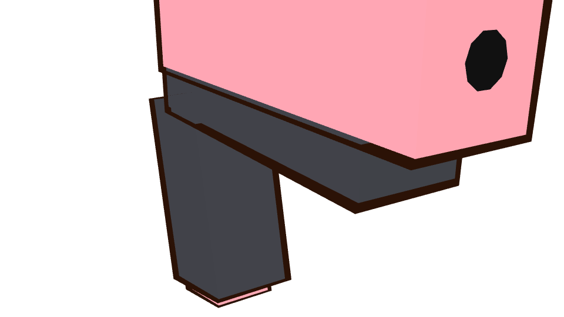
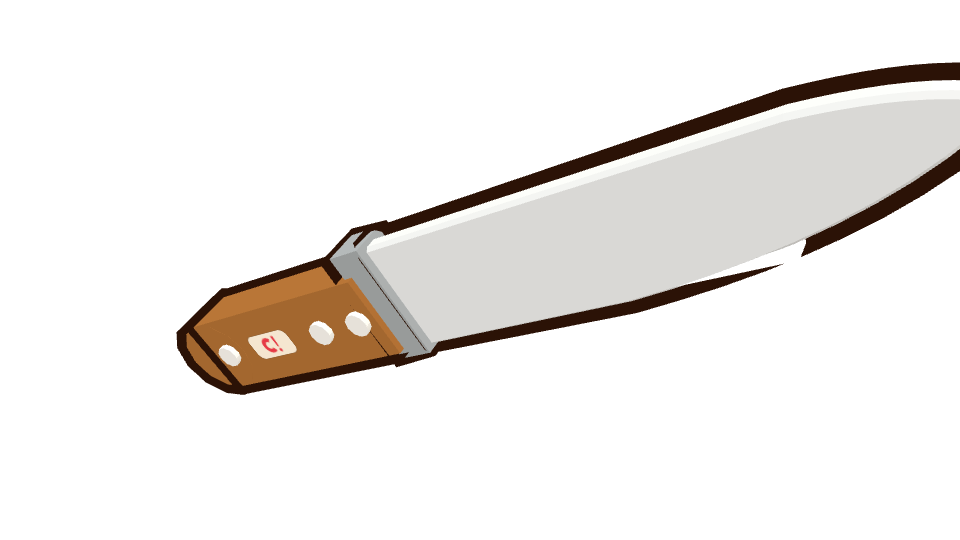

As fotos são o modelo de primeira pessoa do jogo, renderizado sem as mãos. A classe 2 já é a última: nascer sem tocar usa ela. O cronômetro fica pregado no topo, fora do painel.
Recomendada · A · lista e Gunsmith Cinco classes, foto grande da primária, barras do stat que o jogo já tem, peças em volta da arma. Quem matou fica acima do painel.
Classe Arame · Pistolinha · Faca

Pistolinha
FacaWS ↑↓ 1–5 arma na hora · Enter confirma · U usar último · Espaço nasce com a dourada. O tracinho branco é a arma de fábrica.
B · faixa de fotos As cinco armas aparecem juntas. O Gunsmith vira uma linha. Sobra mais tela para quem matou, e o slot fica menor.
AD ←→ 1–5 · as barras grandes ficam de fora desta faixa
C · arma em destaque A foto ocupa o centro e cobre quem matou. O cronômetro continua no topo. A lista vira nome, sem foto.
Recomendada · tela estreita A lista deita numa faixa de fotos. A arma e os quatro slots continuam, e o nascer fica preso embaixo.
último